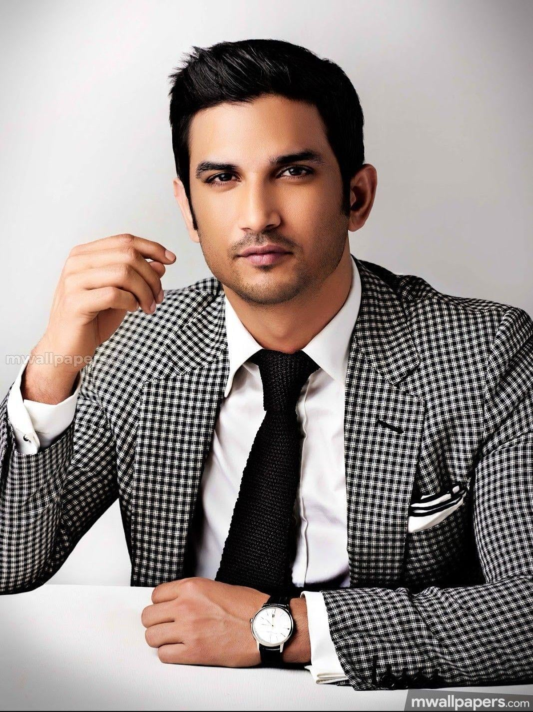
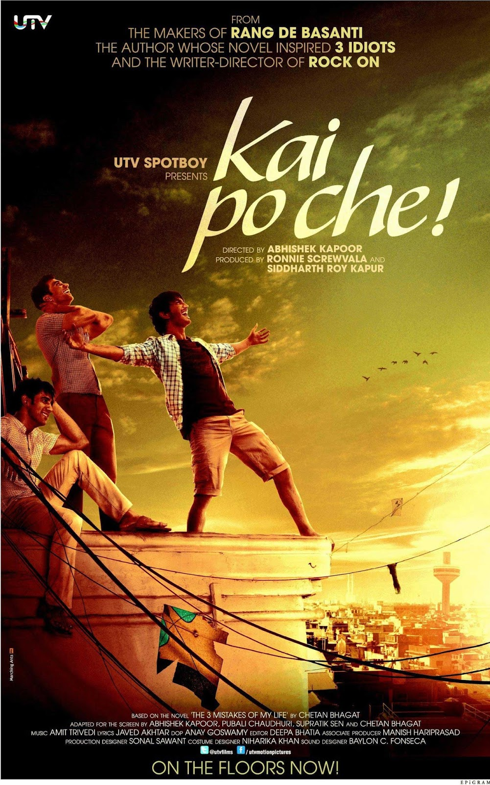
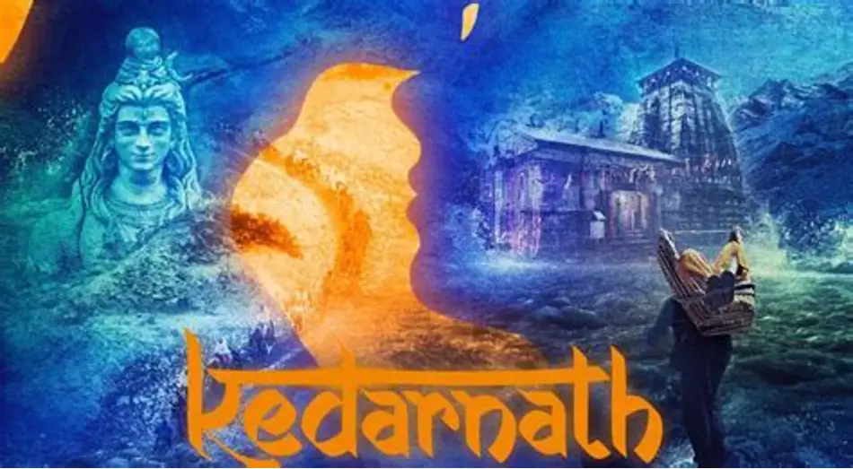
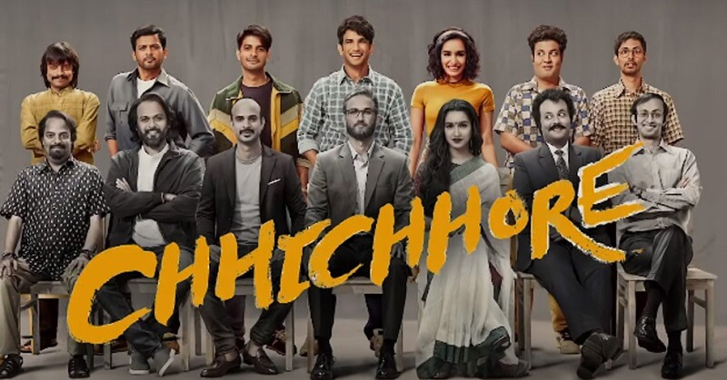
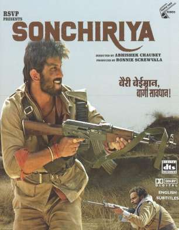
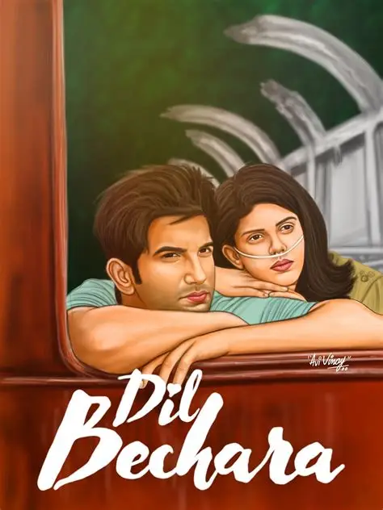

Sushant Singh Rajput
Actor | Dreamer | Inspiration
Remembering a brilliant actor whose passion, talent and unforgettable performances touched millions of hearts.
Discover His Story
Sushant Singh Rajput
1986 – 2020
Early Life & Education
Sushant Singh Rajput was born on 21 January 1986 in Patna, Bihar, India. From an early age, he showed interest in science, technology and learning.
His story begins with a small-town boy from Patna, Bihar, who left his engineering career behind to follow his passion for acting and eventually became a successful Bollywood star. His journey was not just about fame and films; it was about curiosity, courage, hard work, and the desire to keep learning. Instead of choosing an ordinary and secure path, he followed his dreams and worked his way from television to the big screen.
His remarkable performances in movies like Kai Po Che!, PK, M.S. Dhoni: The Untold Story, Chhichhore, and Dil Bechara inspired millions of people. He made every character feel real and connected with audiences through his sincere acting. His life teaches us an important lesson: Your starting point does not decide your destination. No matter where you come from, you can achieve great things through passion, courage, dedication, and continuous learning. Sushant's journey reminds us to follow our dreams, believe in ourselves, keep moving forward, and always be kind to others because everyone may be fighting a battle we cannot see. His story will continue to inspire generations to dream big and choose their own paths.
He studied engineering at Delhi Technological University. However, his passion for acting encouraged him to follow a different career path.
Through dedication and hard work, he entered the television industry and later became a successful Bollywood actor.
Career Journey
Television Career
He gained popularity through television, especially his role in Pavitra Rishta.
Bollywood Debut
He made his Bollywood debut with Kai Po Che! in 2013.
Major Success
His performances in films like MS Dhoni: The Untold Story earned him wide recognition.
Popular Movies
Some memorable films from his acting career.

Kai Po Che!
2013Drama | Friendship

MS Dhoni | The Untold Story
2016Biography | Sports

Kedarnath
2018Romance | Drama

Chhichhore
2019Comedy | Drama

Sonchiriya
2019Story | Drama

Dil Bechara
2020Romance | Drama
His Legacy Lives On
Sushant Singh Rajput passed away on 14 June 2020. His films, performances and curiosity about the world continue to be remembered by audiences.
"Some journeys end, but their memories remain forever."